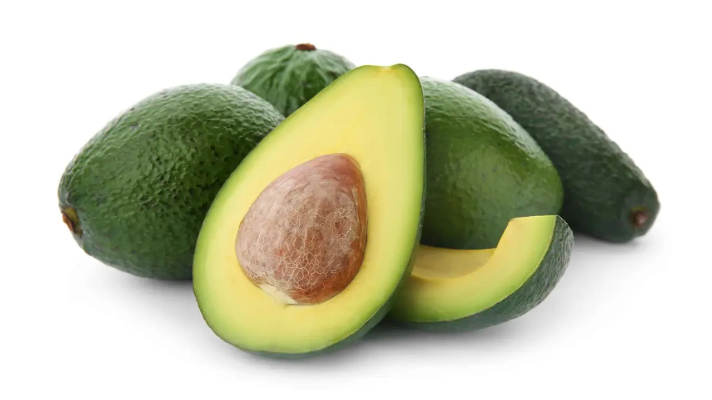
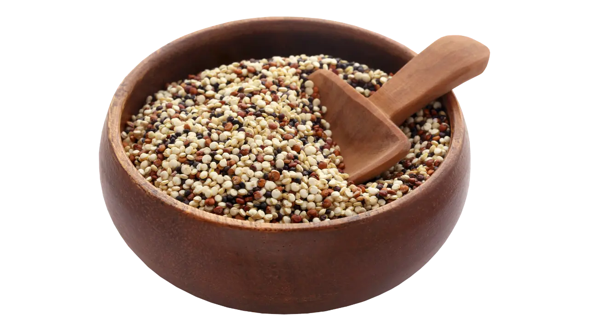

Weight gain refers to increased body weight due to various factors such as
increased muscle mass, fat deposits, or fluid retention. While weight gain is often associated
with negative connotations, it can be necessary and beneficial for some individuals. Weight gain
is necessary for individuals who are underweight or have a low body mass index (BMI). A low BMI
can indicate an individual is not getting enough nutrients or calories, leading to a weakened
immune system, fatigue, and other health issues.
Weight gain can be caused by a calorie deficit, sedentary lifestyles, genetic
factors, and certain medical disorders or drugs. It is the result of a complicated interaction
between food choices, physical activity levels, heredity, and general health. Understanding
these elements aids in the maintenance of a healthy weight.
1. Genetics: Genetics play a significant role in determining an
individual's body weight. Some people may have a naturally slender build, while others may have
a more muscular or curvier body type. However, genetics is not the only determining factor for
body weight. Lifestyle and environmental factors also play a role.
2. Medical Conditions: Certain medical conditions can cause unintentional
weight loss, such as hyperthyroidism or cancer. In these cases, weight gain may be necessary to
restore the individual's health and well-being.
3. Athletic Performance: For athletes and bodybuilders, weight gain may be
necessary to increase muscle mass and improve athletic Performance. However, gaining weight
safely and avoiding unhealthy methods such as overeating or using performance-enhancing drugs is
important.
4. Pregnancy: During pregnancy, weight gain is necessary for healthy
growth and development of the fetus. However, pregnant women should aim to gain weight safely
and under the guidance of a healthcare professional.
5. Aging: As we age, our metabolism slows down, and we may lose muscle
mass. This can lead to weight gain, particularly if we are inactive and do not make dietary
adjustments to accommodate our changing needs.
6. Nutrition: Nutrition plays a vital role in weight gain, and a healthy
diet for weight gain is essential. Eating a diet rich in protein, healthy fats, and complex
carbohydrates can help individuals gain weight safely and effectively. It is also important to
consume enough calories to support weight gain. Individuals should aim to eat several small
meals throughout the day rather than three large meals.
7. Exercise: While diet is a crucial component of weight gain, exercise
can also play a role. Resistance training and weightlifting can help individuals build muscle
mass, which can contribute to weight gain. However, it is important to engage in exercise safely
and under the guidance of a healthcare professional.
8. Lifestyle Changes: Making lifestyle changes such as reducing stress,
getting enough sleep, and avoiding smoking can also contribute to healthy weight gain. Stress
and lack of sleep can cause the body to release hormones that promote weight loss, while smoking
can suppress appetite and contribute to weight loss.
Weight gain is necessary for individuals who are underweight or have a low
BMI. While weight gain is often associated with negative connotations, it can benefit certain
individuals. Gaining weight safely and through healthy means is essential. Individuals should
aim to eat a healthy diet for weight gain, engage in regular exercise, and make lifestyle
changes to support their weight gain goals.
Maintaining a healthy diet is essential for gaining weight safely. While it
may seem counterintuitive, a well-balanced diet can aid in sustainable weight gain. Consuming
calorie-dense foods rich in nutrients can help individuals gain weight without compromising
their overall health. Below are seven healthy foods that can be incorporated into a diet for
gaining weight.
1. Nuts and Nut Butter: Nuts and nut butter are an excellent source of
healthy fats and protein. They are calorie-dense and provide sustained energy throughout the
day. Almonds, cashews, and peanuts are high in calories and can be added to smoothies and
oatmeal or consumed as a snack. Nut butter can also be used as a spread or added to smoothies.
2. Avocado: Avocado is a nutrient-dense fruit that is high in calories and
healthy fats. It can be added to salads and sandwiches or consumed as a snack. Avocado is also a
good source of fibre, potassium, and vitamin C.

3. Quinoa: Quinoa is a gluten-free grain that is high in protein and
fibre. It is also rich in vitamins and minerals such as iron and magnesium. Quinoa can be used
as a base for salads, added to stir-fries, or consumed as a side dish.

4. Salmon: Salmon is an excellent source of protein and healthy fats. It
is also rich in omega-3 fatty acids, which have been shown to reduce inflammation and improve
heart health. Salmon can be grilled, baked, or added to salads.
5. Sweet Potatoes: Sweet potatoes are a nutrient-dense carbohydrate that
is rich in fibre and vitamins such as vitamins A and C. They are also high in calories and can
be baked, roasted, or mashed. Sweet potatoes can be consumed as a side dish or as the base of a
bowl.
6. Whole Milk: Whole milk is an excellent source of protein, calcium, and
healthy fats. It is also calorie-dense and can aid in weight gain. Whole milk can be added to
smoothies, consumed as a beverage, or used as a base for sauces and soups.
7. Eggs: Eggs are an excellent source of protein and healthy fats. They
are also rich in vitamins such as vitamin B12 and D. Eggs can be consumed in various ways, such
as scrambled, boiled, or added to omelettes.
Incorporating the foods mentioned above into a healthy diet for weight gain
can aid individuals in gaining weight safely. It is important to note that gaining weight should
be gradual, and consuming excessive amounts of calorie-dense foods may lead to adverse health
effects. Therefore, you must consult a healthcare professional before making any significant
changes to your diet. By following these diet tips, individuals can achieve sustainable weight
gain without compromising health.
Gaining weight safely requires a healthy diet for weight gain, which includes
a balance of macronutrients and micronutrients. While some may think that simply increasing
their caloric intake is enough to gain weight, it is important to ensure that the body gets the
necessary nutrients to support muscle growth and overall health.
1. Protein: One of the most important nutrients for gaining weight is
protein. This macronutrient is essential for building and repairing muscle tissue and can be
found in various foods such as meat, poultry, fish, dairy products, beans, and nuts. Aim to
consume at least 1 gram of protein per pound of body weight daily to support muscle growth.
2. Carbohydrates: Carbohydrates are another important macronutrient for
weight gain, as they provide the body with energy to fuel workouts and promote muscle growth.
Good sources of carbohydrates include whole grains, fruits, vegetables, and starchy vegetables
such as potatoes and sweet potatoes.
3. Fats: While many people try to avoid fats when trying to lose weight,
they are actually an important nutrient for gaining weight. Fats provide the body with energy,
help absorb certain vitamins, and are necessary for producing hormones. Good sources of healthy
fats include nuts, seeds, avocados, olive oil, and fatty fish such as salmon.
4. Vitamins and Minerals: In addition to macronutrients, it is also
important to ensure that the body is getting enough vitamins and minerals to support overall
health. Vitamins and minerals help the body function properly. They can be found in various
foods such as fruits, vegetables, whole grains, and lean protein sources.
5. Hydration: Staying hydrated is also important for gaining weight
safely. Drinking enough water can help to prevent dehydration, which can negatively impact
athletic performance and overall health. Aim to drink at least 8 cups of water daily and more if
you exercise or sweat heavily.
In addition to getting the right nutrients, there are also some diet tips for
gaining weight that can help to support muscle growth and overall health. One important tip is
to eat frequently throughout the day, which can help prevent muscle breakdown and promote muscle
growth. Aim to eat at least 5-6 small meals per day, with a balance of protein, carbohydrates,
and healthy fats in each meal.
Weight gain is a common concern for many people. But did you know that
certain superfoods can help you gain weight healthily? These foods include nuts, avocados, whole
grains, potatoes, cheese, eggs, and bananas. The key to incorporating these foods into your diet
is transforming them into delicious and satisfying meals. Here are some cooking tips and recipes
to help you do just that!
1. Nuts: Nuts are a great source of healthy fats and protein. One way to
incorporate nuts into your diet is by making homemade nut butter. Simply blend your favourite
nuts in a food processor until they form a smooth paste. You can then use the nut butter as a
toast spread or a fruit dip. Another great way to use nuts is by adding them to your morning
oatmeal or yoghurt bowl. Top your bowl with a handful of chopped nuts for extra crunch and
flavour.
2. Avocados: Avocados are loaded with healthy fats and fiber. Making
avocado toast is one of the easiest ways to incorporate them into your diet. Simply toast a
slice of whole-grain bread and top it with mashed avocado, salt, and pepper. You can also use
avocado as a substitute for mayonnaise in sandwiches and wraps. Another great way to use
avocados is by making guacamole. Mix mashed avocado with diced tomato, onion, cilantro, lime
juice, and salt for a tasty dip.
3. Whole Grains: Whole grains are a great source of complex carbohydrates
and fibre. One way to incorporate whole grains into your diet is by making a hearty grain bowl.
Cook your favourite whole grain, such as brown rice or quinoa, and top it with roasted
vegetables, protein, and a tasty sauce. You can also use whole grains in your baking. Substitute
whole-grain flour for white flour in recipes for muffins, bread, and pancakes.
4. Potatoes: Potatoes are a great source of carbohydrates and fiber. One
of the easiest ways to incorporate them into your diet is by making oven-roasted potatoes.
Simply toss sliced potatoes with olive oil, salt, and pepper, and roast them in the oven until
crispy. You can also use potatoes as a base for soups and stews. Dice potatoes and add them to
your favourite soup recipe for a hearty and filling meal.
5. Cheese: Cheese is a great source of protein and calcium. One way to
incorporate cheese into your diet is by making a grilled cheese sandwich. Use whole-grain bread
and add some sliced tomato or avocado for extra nutrition. You can also use cheese as a topping
for salads and vegetables. Sprinkle some grated cheese over your roasted vegetables for some
extra flavour.
6. Eggs: Eggs are a great source of protein and healthy fats. One way to
incorporate eggs into your diet is by making an omelette. Beat two eggs in a bowl and add some
chopped vegetables and cheese. Cook in a non-stick skillet until set. You can also use eggs as a
protein source in salads and sandwiches. Hard-boil some eggs and slice them for a protein-packed
salad topper.
7. Bananas: Bananas are a great source of carbohydrates and fiber. One way
to incorporate bananas into your diet is by making a smoothie. Blend a ripe banana with some
almond milk, peanut butter, and ice for a creamy and satisfying drink.
Another way to use bananas is making banana pancakes. Mash a ripe banana and
mix it with an egg, some oats, and a pinch of cinnamon. Cook on a non-stick skillet until golden
brown. You can also use bananas as a natural sweetener in baking. Substitute mashed bananas for
sugar in recipes for muffins and pieces of bread.
Incorporating these weight gain superfoods into your diet doesn't have to be
difficult or boring. You can transform these foods into delicious and satisfying meals with
these cooking tips and recipes. The key is to experiment and find what works best for you. Feel
free to try new recipes and flavour combinations. You can turn these superfoods into some of
your favourite dishes with a little creativity.
Are you looking for a way to enhance your fitness and wellness results?
Consider adding supplements to your meal plan. Supplements can provide many benefits, including
improved muscle growth, increased energy levels, and faster recovery times. Here are just a few
of the many reasons why you should consider incorporating supplements into your daily routine.
1. Increased Nutrient Intake: Even if you eat a healthy, well-rounded
diet, it can be difficult to get all of the nutrients your body needs to perform at its best.
Supplements can help fill the gaps by providing your body with essential vitamins, minerals, and
other nutrients. For example, suppose you need more protein in your diet. In that case, a
protein supplement can help ensure your muscles have the fuel to grow and recover.
2. Improved Muscle Growth: If you're looking to build muscle, supplements
can help. Protein supplements, in particular, are a popular choice for those looking to increase
muscle mass. Whey protein, in particular, is a fast-digesting protein that can help promote
muscle protein synthesis and improve muscle recovery.
3. Increased Energy Levels: Supplements can also help improve your energy
levels. Caffeine, for example, is a popular supplement that can help boost energy and focus.
Creatine is another popular supplement that can help increase energy levels by promoting the
production of ATP, the primary energy source for your muscles.
4. Faster Recovery Times: Supplements can also help speed up your recovery
times after a workout. For example, branched-chain amino acids (BCAAs) are a group of amino
acids that can help reduce muscle damage and soreness. This can help you recover faster and get
back to your workouts sooner.
5. Improved Overall Health: In addition to the specific benefits mentioned
above, supplements can also help improve your overall health. For example, omega-3 fatty acids
are a type of healthy fat that can help improve heart health and reduce inflammation. Probiotics
are another popular supplement that can help improve gut health and boost immunity.
Of course, it's important to remember that supplements should be used to
supplement a healthy diet and lifestyle, not replace them. While supplements can provide many
benefits, they are not a magic solution and should not be relied upon as the sole source of
nutrients in your diet. Additionally, choosing high-quality supplements from reputable brands is
important to ensure that you are getting the best possible products.
Conclusion: Adding supplements to your meal plan can be a great way to
enhance your fitness and wellness results. Whether you're looking to build muscle, increase
energy levels, or simply improve your overall health, there is a supplement out there that can
help. Just use supplements to complement a healthy diet and lifestyle, and choose high-quality
products from trusted brands.
Some links on this health and fitness blog may be affiliate links. We only recommend products and
services. We've personally used it. Any commission received helps maintain this site. This site is not
intended to provide medical or financial advice and is for entertainment only. Please consult a
healthcare professional before making significant changes to your health practices. Read our affiliate
disclosure in our privacy policy.
 23 January, 2023 @ 09:41 AMPublished Date & Time |
23 January, 2023 @ 09:41 AMPublished Date & Time |